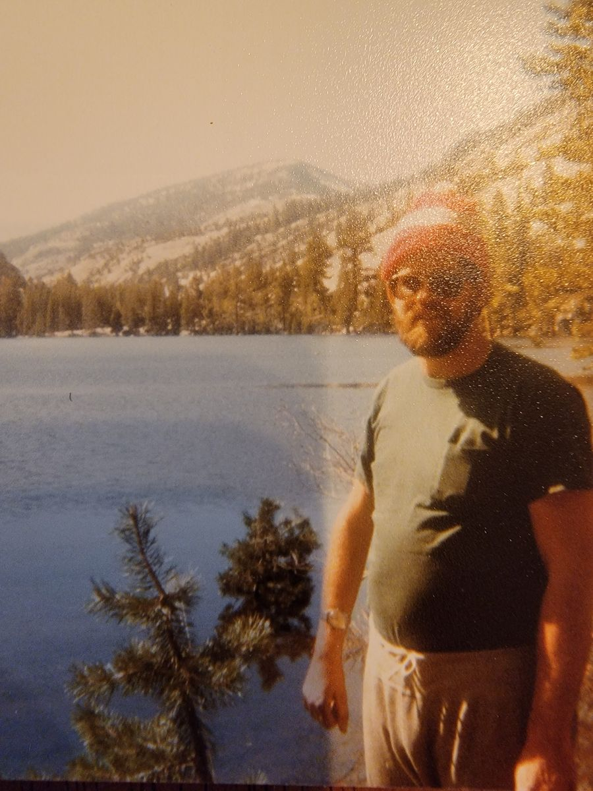

Paul Thomas Shuey
1947–2021

Obituary
Paul Thomas Shuey of Hermiston was born January 18, 1947 in San Francisco, CA the son of Maurice and Doris (Stafford) Shuey. He passed away on Friday July 23, 2021 in Hermiston at the age of 74.
Paul grew up and attended school in Canoga Park, CA. After high school, he worked for McDonnell Douglas Aircraft for a couple years. He then went to college at UCLA where he studied Radiology. He worked as a Radiographer his entire career in Medical facilities in Southern California, Nevada and Hermiston, Oregon. He worked for Good Shepherd Hospital in Hermiston from 1998 until 2011, when he moved to Fernley, NV. In 2020, he moved back to Hermiston to be closer to family.
Paul was an avid chess player who played in many tournaments and held an expert rating. He also enjoyed playing games, camping, deep sea fishing, back packing and spending time with his family.
Paul married Vicki Bates in Canoga Park, CA on April 10, 1971.
He is survived by his wife of fifty years, Vicki; daughter, Amber and husband Mike Kellison; son, Trent Shuey; grandchildren, Keegan and Kaiti; brother, Robert Shuey; two sisters, Barbara Abdullah and Kathy Lopez; and many extended family members.
He was preceded in death by his parents.
Dad's facebook account - https://www.facebook.com/paul.shuey.1
~~Some reasons dad is my hero~~
He achieved incredible feats in the face of polio. Born right handed but forced to become a lefty. A fighter, brawled for his family and chess. Any game, he was a competitor who liked to have a good time. Ping pong and basketball were his jam, and he was solid. His left handed game was stronger than my dominant hand will be ever.
Chess... cards, board games, NES, PC...
He always provided for us, the family, no matter what it took.
Technology, science, chemistry, and medicine.
Camping, fishing, roasting marshmallows, popcorn, clean windows, reiki, pancakes...
I love you so much, Dadio!